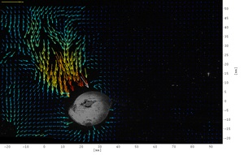
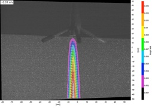

Fluid-Particle Interactions - Effect of shape
[A. Collignon, E. Variano]
Particle-laden flows are of primary importance in Environmental Fluid Mechanics. They are at the core of sediment transport, water treatment processes... These flows are very hard to study experimentally because it is difficult to extract the kinematic variables for both the particles and the fluid. We design a new experimental technique which enables us to track the fluid 3D velocity field as well as the 3D position, speed and rotation rate of the particles. Using this revolutionnary technique, we will study the influence of the particles shape in various types of particle laden flows.
Sand Deposition into Gravel Riverbeds
[R. Leonardson, J.R. Hunt, W.E. Dietrich, A. Wydzga]
There are three main aspects to my research. The theoretical aspect of my work involves developing a set of equations to describe the one-dimensional deposition of sand into stable gravel riverbeds. This model combines theories from the fields of particle physics, filtration, debris flows and fluid mechanics. Using a simple numerical model, the model predicts the vertical distribution of sand deposits within gravel bed. The results are tested against data from laboratory experiments of deposition into 1-D (plane-bed) gravel riverbeds. This work is expanded by a laboratory experiment performed on the Main flume at the St. Anthony Falls Laboratory, in which we deposited sand into a flume-bed with 3-D topography. This was the largest-scale laboratory experiment of sand deposition to date and the first performed into gravel bars developed by sediment transport (as opposed to being constructed by hand, which affects the gravel size distribution). Analysis of the deposition patterns allows us to test performance of the model under complex flow and sediment transport patterns analogous to those found in natural rivers. The project is completed with a field study on the Russian River in Northern California. This river has a high suspended sediment load and significant flow impacts from 2 off-stream dams, yet it supports several threatened fish species. We analyze over 50 years of flow and sediment data to understand the storage and flux of fine sediment in the riverbed and estimate how emergency (flood-control) dam releases can be used to improve habitat for Chinook salmon.

Acoustic doppler velocimetry bias
[C. Poindexter, E. Variano]
Acoustic doppler velocimeters (ADVs) measure velocity remotely, and are thus considered non-intrusive. They operate by emitting ultrasound as dual pulse pairs and translating backscattered signal phase shift into fluid velocity. Particle image velocimetry (PIV) data show that ADVs collecting data in a tank generate velocities as high as 2 cm/s above background. The flow, largely in the vertical along-beam direction, accelerates from the ADVs ultrasound emit transducer, reaching a maximum near the velocimeter sampling volume before dropping off. Sound generated flow was first observed by Faraday in the 1800s and explained theoretically by Lighthill and Nyborg in the mid-20th century. Essentially it is sound beam absorption that drives the flow. Flows generated by diagnostic ultrasound in medicine have been well studied, however, investigations of ADV generated flow and potential impacts on measurement quality do not appear in the literature. The intense, pulsed nature of ADV-emitted sound leads to formation of higher harmonics, which are absorbed more rapidly than the fundamental frequency and cause faster flows. Scenarios where ADV generated flow may impact ADV data quality include turbulence measurements and measurements in near zero flow environments like estuaries at slack tide.